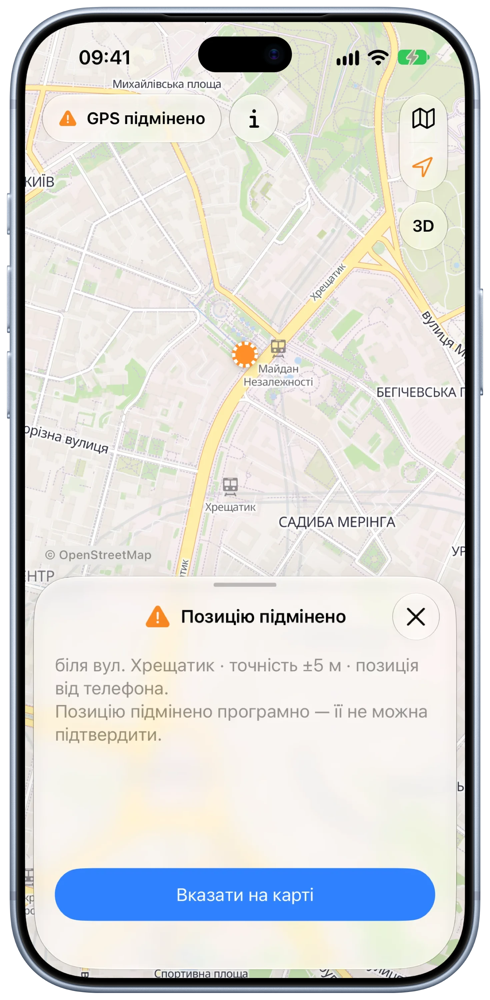
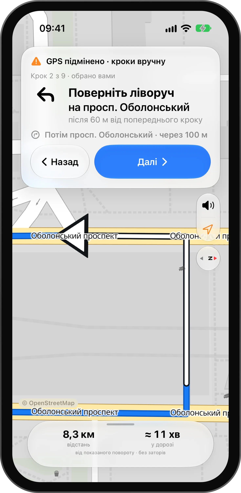
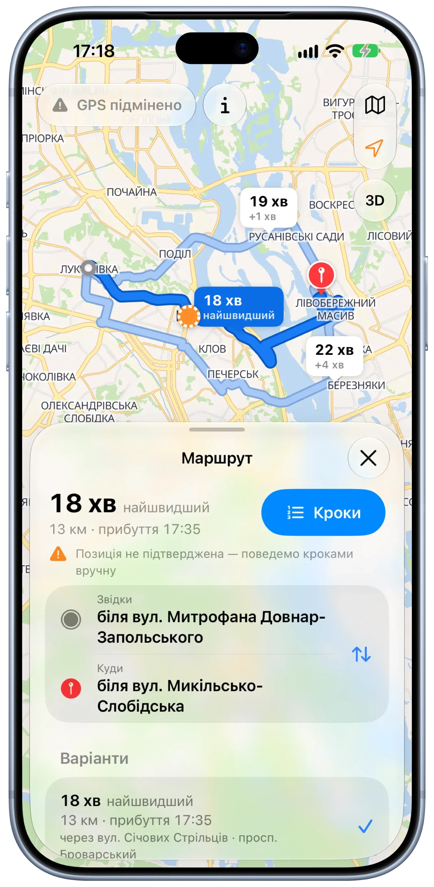
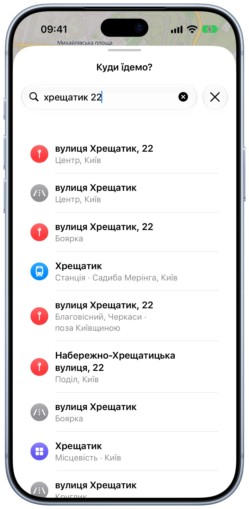
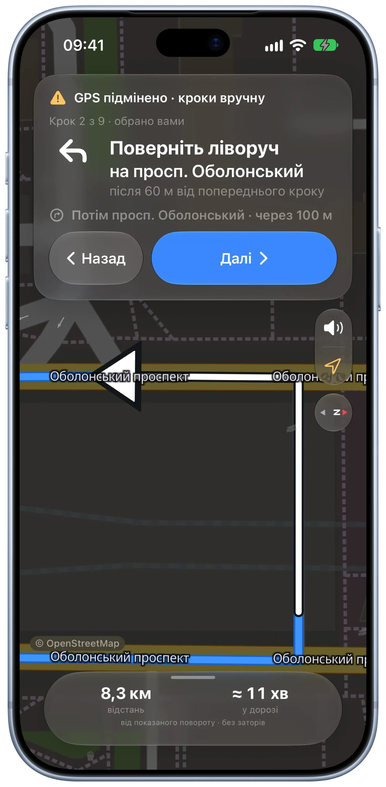

A navigator that never guesses where you are.
Veylo is an iPhone navigator for Kyiv and Kyiv oblast, where satellite positioning is jammed and spoofed. It asks the driver before it trusts the dot, keeps the directions going as manual steps when it can’t, and runs the map, routing and address search on the phone itself.

01 — What I built and how I used AI
A map, a router and a search engine that live on the phone.
Veylo is a native iPhone app with its own offline map, its own router and its own address search. There is no AI inside the product — routes and position checks are deterministic code — but it was built with AI-assisted development. This section keeps the two apart.
- My responsibility
- Product definition, UX and UI, the position-trust model, guidance and manual steps, the on-device router, the offline map pipeline, address search, CarPlay and the App Store kit.
- Implementation
- SwiftUI for iOS 26 with Liquid Glass. MapLibre Native draws OpenStreetMap vector tiles shipped inside the app. A road graph of Kyiv oblast is built from OpenStreetMap in CI and routed on the phone. The address index is built on the device from the same data. StoreKit 2 handles purchases on the device, with no server of my own.
- AI-assisted development
- Claude Code wrote first implementations from my specs and written decision records. A Python reference router is the specification: CI fails unless the Swift router returns the same routes on a test grid and on real routes across the oblast. Independent AI review passes read every change; one caught the typed address leaking into the system log and online answers cached on disk, both fixed before merge.
- My review and decisions
- Never act on a position the driver has not confirmed; what replaces live guidance when trust drops; which numbers may be shown without a position; what goes to the internet and what never leaves the phone; which thresholds stay proposals until they are measured in a car.
- Release status
- In development. Checked in the iOS simulator and installed on an iPhone; not yet tested on the road or in a CarPlay car. Trust thresholds are proposals until measured. App support
One build loop, start to finish
- Rough flow. Confirm where you are → choose where to → compare routes → follow the turns.
- AI-generated first implementation. A native app with an Apple-Maps-style sheet, on-device routes and turn-by-turn voice in Ukrainian, generated from that flow and the decision records.
- What I decided. In Kyiv a spoofed fix can be kilometres off and still report ±5 m, so a navigator that silently follows the dot will confidently lead you wrong. Trust became one state the whole interface reads — the chip, the location button, the dot and the guidance card. When it drops, live guidance becomes “Кроки вручну”: the route’s turns as printed directions that only the driver advances.
- Working result. Search an address or long-press the map, compare up to three routes, start. With a spoofed position, the app shows the turns one by one with “Назад” and “Далі” and frames each turn on the map.
A limitation I designed around: without a trusted position, a missed turn is invisible. Manual steps never pretend otherwise — no arrival time, distances labelled “from the shown turn”, nothing advancing on a timer, and a note that a passenger should step through the turns.
02 — The problem
In Kyiv the blue dot can lie — and most navigators believe it.
Electronic warfare jams and spoofs satellite positioning across the city. A phone can report a position across the river with confident accuracy, or freeze in the middle of a turn. Navigation apps follow it, reroute into nonsense, and drivers learn to ignore them exactly when they need help.
- The dot jumps kilometres or freezes mid-turn
- Rerouting follows the fake position, not the car
- A spoofed fix still shows “accuracy ±5 m”
- Mobile internet drops, and online maps go blank
- In my experience, new roads reach some maps late
03 — Product thinking
Three bets that shaped the app.
Never guess a position
The driver confirms where they are. Jumps, impossible speeds, simulated or stale fixes and positions outside the oblast withdraw that trust, and the app says why.
Everything on the phone
Map, routing and address search work with no server and no internet. A connection only adds online search results on top.
Keep the directions
When the position can’t be trusted, the route becomes manual steps the driver advances — like printed directions, never on a timer.
04 — Key UX & UI decisions
Where it became a real product.
“Is this your location?” before anything else
On launch Veylo shows where the phone thinks it is and asks. A simulated position can’t be confirmed at all; a jump or a coarse fix explains what is wrong and offers to pick the start on the map instead. The same state drives the chip at the top, the location button and the style of the dot.

Printed directions, one turn at a time
Without a trusted position the guidance card becomes “Кроки вручну”: the turn, the street, how far it is from the previous one, what comes next, and a wide “Далі”. The map frames the turn with an arrow. The bottom row shows distance and time from the shown turn — never an arrival time the app can’t know.

Long-press anywhere, then Go — or Steps
A long press drops a pin with “Маршрут сюди” and “Звідси”, the fastest way to a place with no address, and it works offline. Up to three routes appear with their time differences on the map. The green “Поїхали” shows only with a confirmed position; otherwise the same button reads “Кроки”, as Apple Maps offers Steps for a route that doesn’t start where you are.

Search that works without signal
The index is built on the phone from the map inside the app: streets, house numbers, towns, districts, shops and stations. It tolerates Ukrainian and Russian spellings, Latin transliteration, the wrong keyboard layout and typos. With internet, online results merge in without duplicates; only the typed text and a point rounded to about a kilometre are sent.

A map made for glances
Guidance switches to a driving style: grey ground, white streets, amber main roads and larger street names, built for contrast in sunlight. At night the same map turns dark, and the cards follow the system appearance.

05 — Under the hood
Fresh OpenStreetMap, rebuilt with one button.
One CI workflow turns a fresh OpenStreetMap extract into everything the app ships: the road graph, the vector tiles, map styles with the high-contrast driving look, fonts and icons. Search is extracted from the same tiles on the phone, so the map, the router and the results always show the same roads.
- Road graph: 316,330 intersections, 754,040 road segments, 9,554 turn restrictions — 40 MB
- Map: vector tiles of Kyiv and the oblast, zoom 0–14 — about 126 MB, no internet needed
- Search: 72,273 entries and 225,609 house numbers, indexed on the device
- Router parity: the Swift router must match the Python reference in CI
06 — Design system
Native first: it should feel like Apple made it.
One persistent Liquid Glass sheet over a full-screen map, system controls, SF Symbols and Dynamic Type. Colour is reserved for meaning: blue for a confirmed position and the route, orange for anything the app doubts, green only for a drive that can follow you.
Component language
- GPS chip
- Position check
- Maneuver card
- Manual steps
- Route callouts
- Place card
- Search rows
- Driving map
Every state of trust has one look across the app and CarPlay, so a doubtful position reads the same in the chip, on the dot and in the guidance card.
07 — Where it stands
What works today.
A working iPhone app in development. The search figure was measured on a Mac with the real Kyiv data; nothing on this page was measured on the road yet.
08 — More